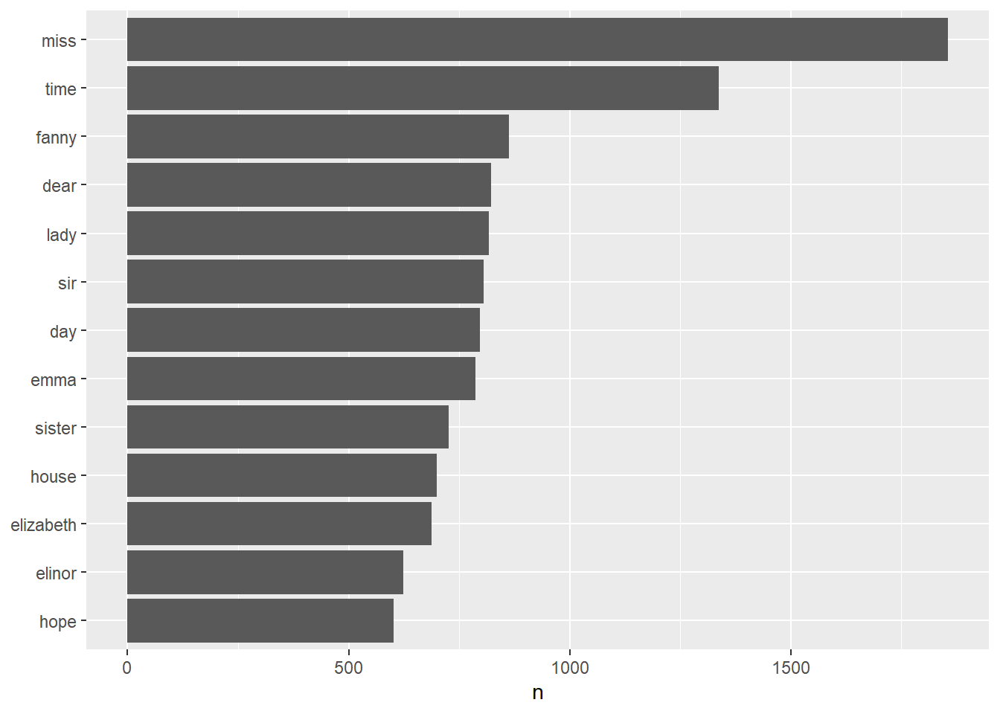
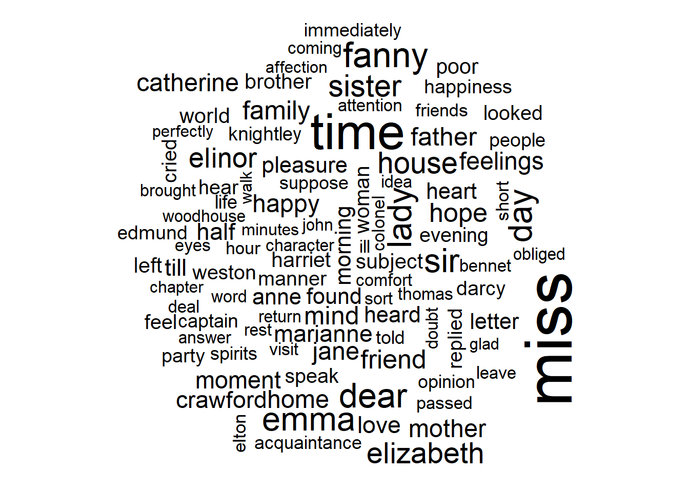
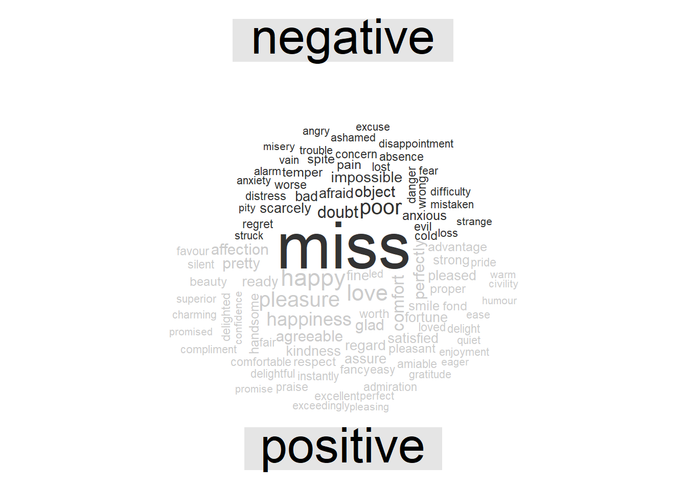
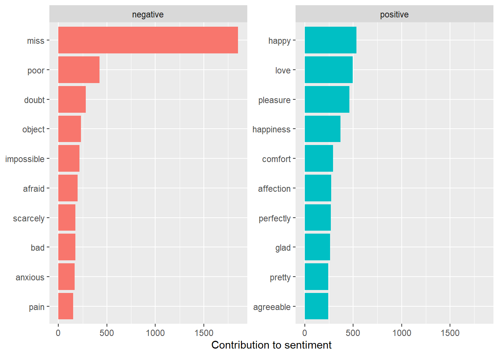
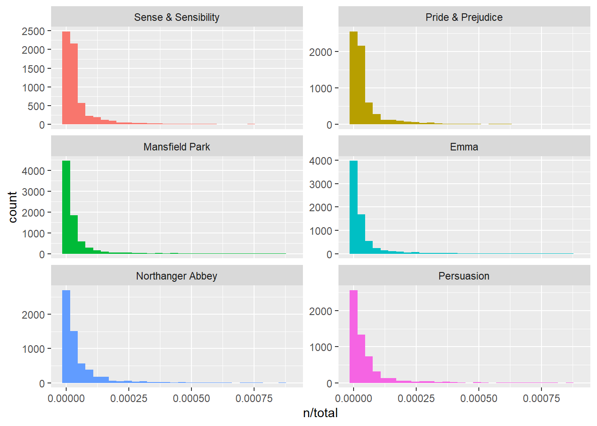
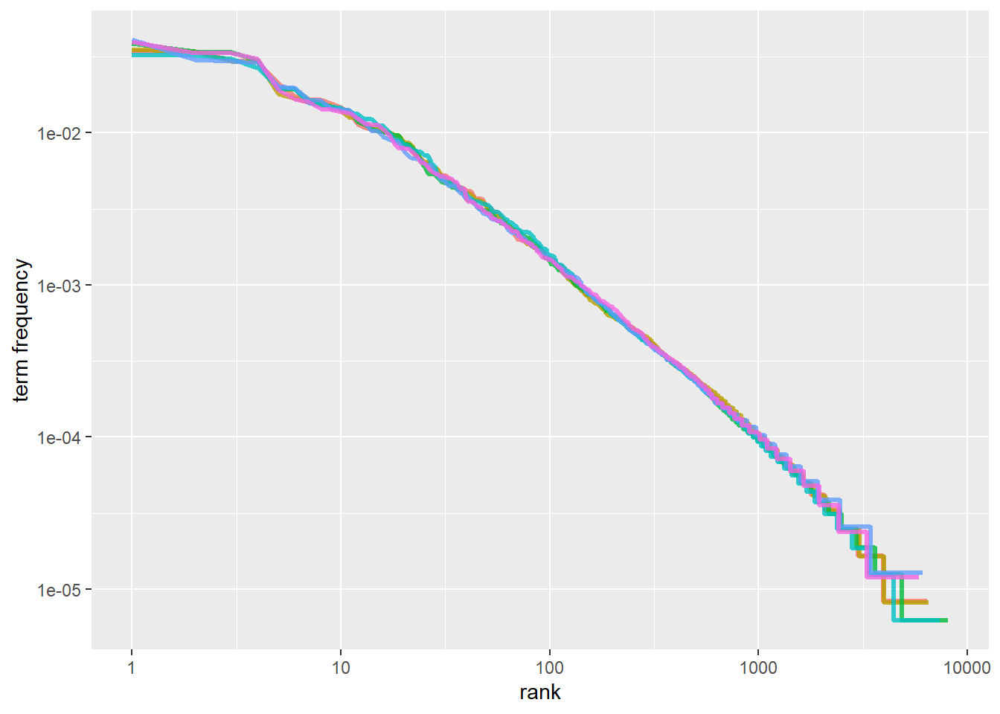
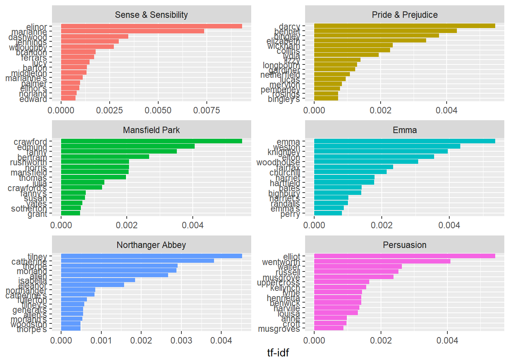

8 英文文本分析
代码提供：谢钰莹 倪云 谢桂芳
主要内容：
- 1、整洁文字
- 2、词频分析及可视化
- 3、词云
- 4、分析单词和文档频率：tf-idf
- 5、案例分析：挖掘NASA元数据
8.1 整洁文字
载入Jane Austen作品的R包
library(janeaustenr)
library(dplyr)建立行号、章节号
library(stringr)
original_books <- austen_books() %>%
# %>%是管道函数，可将前一步的结果直接传参给下一步函数
group_by(book) %>%
mutate(linenumber = row_number(),
chapter = cumsum(str_detect(text,
regex("^chapter [\\divxlc]",
ignore_case = TRUE)))) %>% #建立行号、章节号
ungroup()
original_books## # A tibble: 73,422 × 4
## text book linenumber chapter
## <chr> <fct> <int> <int>
## 1 "SENSE AND SENSIBILITY" Sense & Sensibility 1 0
## 2 "" Sense & Sensibility 2 0
## 3 "by Jane Austen" Sense & Sensibility 3 0
## 4 "" Sense & Sensibility 4 0
## 5 "(1811)" Sense & Sensibility 5 0
## 6 "" Sense & Sensibility 6 0
## 7 "" Sense & Sensibility 7 0
## 8 "" Sense & Sensibility 8 0
## 9 "" Sense & Sensibility 9 0
## 10 "CHAPTER 1" Sense & Sensibility 10 1
## # ℹ 73,412 more rows用unnest_tokens函数分词（每行一词）
library(tidytext)
tidy_books <- original_books %>%
unnest_tokens(word, text) #分词
tidy_books## # A tibble: 725,055 × 4
## book linenumber chapter word
## <fct> <int> <int> <chr>
## 1 Sense & Sensibility 1 0 sense
## 2 Sense & Sensibility 1 0 and
## 3 Sense & Sensibility 1 0 sensibility
## 4 Sense & Sensibility 3 0 by
## 5 Sense & Sensibility 3 0 jane
## 6 Sense & Sensibility 3 0 austen
## 7 Sense & Sensibility 5 0 1811
## 8 Sense & Sensibility 10 1 chapter
## 9 Sense & Sensibility 10 1 1
## 10 Sense & Sensibility 13 1 the
## # ℹ 725,045 more rows用anti_join函数删去停用词（如”the”“to”“of”等无实义词）
data(stop_words)
tidy_books <- tidy_books %>%
anti_join(stop_words) ## Joining with `by = join_by(word)`8.2 词频count
统计词频（查找书中最常用的词汇）
tidy_books %>%
count(word, sort = TRUE)## # A tibble: 13,914 × 2
## word n
## <chr> <int>
## 1 miss 1855
## 2 time 1337
## 3 fanny 862
## 4 dear 822
## 5 lady 817
## 6 sir 806
## 7 day 797
## 8 emma 787
## 9 sister 727
## 10 house 699
## # ℹ 13,904 more rows词频可视化(利用ggplot2）
library(ggplot2)
tidy_books %>%
count(word, sort = TRUE) %>%
filter(n > 600) %>% #出现频次在600次以上
mutate(word = reorder(word, n)) %>%
ggplot(aes(n, word)) +
geom_col() +
labs(y = NULL)
8.3 词云
基础操作
library(wordcloud)## Loading required package: RColorBrewertidy_books %>%
anti_join(stop_words) %>%
count(word) %>%
with(wordcloud(word, n, max.words = 100)) #限定词云的最大数量为100## Joining with `by = join_by(word)`
进阶版（用颜色区分词性）
library(reshape2)##
## Attaching package: 'reshape2'## The following object is masked from 'package:tidyr':
##
## smithstidy_books %>%
inner_join(get_sentiments("bing")) %>%
count(word, sentiment, sort = TRUE) %>%
acast(word ~ sentiment, value.var = "n", fill = 0) %>%
comparison.cloud(colors = c("gray20", "gray80"),
max.words = 100)## Joining with `by = join_by(word)`## Warning in inner_join(., get_sentiments("bing")): Detected an unexpected many-to-many relationship between `x` and `y`.
## ℹ Row 131015 of `x` matches multiple rows in `y`.
## ℹ Row 5051 of `y` matches multiple rows in `x`.
## ℹ If a many-to-many relationship is expected, set `relationship =
## "many-to-many"` to silence this warning.
拓展
借助文本挖掘，你可以了解一部小说文本的——
- 高频词（词频、词云）
- 最常用的正负面词语（词频+情感）
- 全文情感变化趋势（情感分析可视化）
- 同其他小说的风格差异
示例1 最常用的正负面词语（基于前文bing词典的情感分析结果）
library(tidyr)
jane_austen_sentiment <- tidy_books %>%
inner_join(get_sentiments("bing")) %>%
count(book,index = linenumber %/% 80,sentiment) %>%
spread(sentiment, n, fill = 0) %>%
mutate(sentiment = positive - negative)## Joining with `by = join_by(word)`## Warning in inner_join(., get_sentiments("bing")): Detected an unexpected many-to-many relationship between `x` and `y`.
## ℹ Row 131015 of `x` matches multiple rows in `y`.
## ℹ Row 5051 of `y` matches multiple rows in `x`.
## ℹ If a many-to-many relationship is expected, set `relationship =
## "many-to-many"` to silence this warning.#直接呈现结果
bing_word_counts <- tidy_books %>%
inner_join(get_sentiments("bing")) %>%
count(word, sentiment, sort = TRUE) %>%
ungroup()## Joining with `by = join_by(word)`## Warning in inner_join(., get_sentiments("bing")): Detected an unexpected many-to-many relationship between `x` and `y`.
## ℹ Row 131015 of `x` matches multiple rows in `y`.
## ℹ Row 5051 of `y` matches multiple rows in `x`.
## ℹ If a many-to-many relationship is expected, set `relationship =
## "many-to-many"` to silence this warning.bing_word_counts## # A tibble: 2,555 × 3
## word sentiment n
## <chr> <chr> <int>
## 1 miss negative 1855
## 2 happy positive 534
## 3 love positive 495
## 4 pleasure positive 462
## 5 poor negative 424
## 6 happiness positive 369
## 7 comfort positive 292
## 8 doubt negative 281
## 9 affection positive 272
## 10 perfectly positive 271
## # ℹ 2,545 more rows#进阶版：结果可视化
bing_word_counts %>%
group_by(sentiment) %>%
slice_max(n, n = 10) %>%
ungroup() %>%
mutate(word = reorder(word, n)) %>%
ggplot(aes(n, word, fill = sentiment)) +
geom_col(show.legend = FALSE) +
facet_wrap(~sentiment, scales = "free_y") +
labs(x = "Contribution to sentiment",
y = NULL)
注：1.文中所用宏包需要用install.packages()安装后才能调用；2.运行带有管道函数%>%的命令时最好上下文都运行，避免其找不到数据凭借；3.文本情绪分析有时需转变词汇的词性或对文本进行分句分析，避免如no good（消极）被分为no和good（积极）的情况而影响最终结果的准确性。分析时应多留意修饰词和含义丰富的词汇，有时词性可能会随着含义而改变。
8.4 分析单词和文档频率：tf-idf
8.4.1 简.奥斯汀小说中的术语频率
library(dplyr)
library(janeaustenr)
library(tidytext)
book_words <- austen_books() %>%
unnest_tokens(word, text) %>%
count(book, word, sort = TRUE)
total_words <- book_words %>%
group_by(book) %>%
summarize(total = sum(n))
book_words <- left_join(book_words, total_words)## Joining with `by = join_by(book)`book_words## # A tibble: 40,379 × 4
## book word n total
## <fct> <chr> <int> <int>
## 1 Mansfield Park the 6206 160460
## 2 Mansfield Park to 5475 160460
## 3 Mansfield Park and 5438 160460
## 4 Emma to 5239 160996
## 5 Emma the 5201 160996
## 6 Emma and 4896 160996
## 7 Mansfield Park of 4778 160460
## 8 Pride & Prejudice the 4331 122204
## 9 Emma of 4291 160996
## 10 Pride & Prejudice to 4162 122204
## # ℹ 40,369 more rowslibrary(ggplot2)
ggplot(book_words, aes(n/total, fill = book)) +
geom_histogram(show.legend = FALSE) +
xlim(NA, 0.0009) +
facet_wrap(~book, ncol = 2, scales = "free_y")## `stat_bin()` using `bins = 30`. Pick better value with `binwidth`.## Warning: Removed 896 rows containing non-finite values (`stat_bin()`).## Warning: Removed 6 rows containing missing values (`geom_bar()`).
8.4.2 Zipf’s law
freq_by_rank <- book_words %>%
group_by(book) %>%
mutate(rank = row_number(),
`term frequency` = n/total) %>%
ungroup()
freq_by_rank## # A tibble: 40,379 × 6
## book word n total rank `term frequency`
## <fct> <chr> <int> <int> <int> <dbl>
## 1 Mansfield Park the 6206 160460 1 0.0387
## 2 Mansfield Park to 5475 160460 2 0.0341
## 3 Mansfield Park and 5438 160460 3 0.0339
## 4 Emma to 5239 160996 1 0.0325
## 5 Emma the 5201 160996 2 0.0323
## 6 Emma and 4896 160996 3 0.0304
## 7 Mansfield Park of 4778 160460 4 0.0298
## 8 Pride & Prejudice the 4331 122204 1 0.0354
## 9 Emma of 4291 160996 4 0.0267
## 10 Pride & Prejudice to 4162 122204 2 0.0341
## # ℹ 40,369 more rowsfreq_by_rank %>%
ggplot(aes(rank, `term frequency`, color = book)) +
geom_line(size = 1.1, alpha = 0.8, show.legend = FALSE) +
scale_x_log10() +
scale_y_log10()## Warning: Using `size` aesthetic for lines was deprecated in ggplot2 3.4.0.
## ℹ Please use `linewidth` instead.
## This warning is displayed once every 8 hours.
## Call `lifecycle::last_lifecycle_warnings()` to see where this warning was
## generated.
rank_subset <- freq_by_rank %>%
filter(rank < 500,
rank > 10)
lm(log10(`term frequency`) ~ log10(rank), data = rank_subset)##
## Call:
## lm(formula = log10(`term frequency`) ~ log10(rank), data = rank_subset)
##
## Coefficients:
## (Intercept) log10(rank)
## -0.6226 -1.1125freq_by_rank %>%
ggplot(aes(rank, `term frequency`, color = book)) +
geom_abline(intercept = -0.62, slope = -1.1,
color = "gray50", linetype = 2) +
geom_line(size = 1.1, alpha = 0.8, show.legend = FALSE) +
scale_x_log10() +
scale_y_log10()注：我们在简.奥斯汀的小说语料库中发现了一个与经典版齐普夫定律相近的结果。我们在这里看到的高级语言的偏差在许多语言中并不罕见；一个语言语料库通常包含的稀有词比单一幂律所预测的要少。低等级的偏差更不寻常。简.奥斯汀使用的最常用词的百分比低于许多语言集合。这种分析可以扩展到比较作者，或者比较任何其他文本集合，它可以简单地通过使用简洁的数据原则来实现。
8.4.3 bind_tf_idf ()函数
注：ti-idf的想法是通过减少常用词的权重，增加文档集合或语料中不常用的词的权重，来找到每个文档内容中的重要词。以下我们将从简.奥斯汀的小说集合入手，通过计算ti-idf来在文本中找到重要但不太常见的单词。
book_tf_idf <- book_words %>%
bind_tf_idf(word, book, n)
book_tf_idf## # A tibble: 40,379 × 7
## book word n total tf idf tf_idf
## <fct> <chr> <int> <int> <dbl> <dbl> <dbl>
## 1 Mansfield Park the 6206 160460 0.0387 0 0
## 2 Mansfield Park to 5475 160460 0.0341 0 0
## 3 Mansfield Park and 5438 160460 0.0339 0 0
## 4 Emma to 5239 160996 0.0325 0 0
## 5 Emma the 5201 160996 0.0323 0 0
## 6 Emma and 4896 160996 0.0304 0 0
## 7 Mansfield Park of 4778 160460 0.0298 0 0
## 8 Pride & Prejudice the 4331 122204 0.0354 0 0
## 9 Emma of 4291 160996 0.0267 0 0
## 10 Pride & Prejudice to 4162 122204 0.0341 0 0
## # ℹ 40,369 more rows以下我们来看看简.奥斯汀作品中的高tf-idf术语
book_tf_idf %>%
select(-total) %>%
arrange(desc(tf_idf))## # A tibble: 40,379 × 6
## book word n tf idf tf_idf
## <fct> <chr> <int> <dbl> <dbl> <dbl>
## 1 Sense & Sensibility elinor 623 0.00519 1.79 0.00931
## 2 Sense & Sensibility marianne 492 0.00410 1.79 0.00735
## 3 Mansfield Park crawford 493 0.00307 1.79 0.00551
## 4 Pride & Prejudice darcy 373 0.00305 1.79 0.00547
## 5 Persuasion elliot 254 0.00304 1.79 0.00544
## 6 Emma emma 786 0.00488 1.10 0.00536
## 7 Northanger Abbey tilney 196 0.00252 1.79 0.00452
## 8 Emma weston 389 0.00242 1.79 0.00433
## 9 Pride & Prejudice bennet 294 0.00241 1.79 0.00431
## 10 Persuasion wentworth 191 0.00228 1.79 0.00409
## # ℹ 40,369 more rows接下来让我们看看这些高ti-idf单词的可视化
library(forcats)
book_tf_idf %>%
group_by(book) %>%
slice_max(tf_idf, n = 15) %>%
ungroup() %>%
ggplot(aes(tf_idf, fct_reorder(word, tf_idf), fill = book)) +
geom_col(show.legend = FALSE) +
facet_wrap(~book, ncol = 2, scales = "free") +
labs(x = "tf-idf", y = NULL)
8.5 案例分析：挖掘NASA元数据
NASA如何组织数据？（首先让我们下载JSON文件并查看元数据中储存的内容的名称。）
library(jsonlite)##
## Attaching package: 'jsonlite'## The following object is masked from 'package:purrr':
##
## flatten#有时候网站下载数据很慢，改一下下载时间（默认是60s）
getOption('timeout')## [1] 60options(timeout=10000)
metadata <- fromJSON("https://data.nasa.gov/data.json")
names(metadata$dataset)## [1] "accessLevel" "landingPage"
## [3] "bureauCode" "issued"
## [5] "@type" "modified"
## [7] "references" "keyword"
## [9] "contactPoint" "publisher"
## [11] "identifier" "description"
## [13] "title" "programCode"
## [15] "distribution" "accrualPeriodicity"
## [17] "theme" "license"
## [19] "citation" "temporal"
## [21] "spatial" "language"
## [23] "graphic-preview-description" "graphic-preview-file"
## [25] "data-presentation-form" "release-place"
## [27] "series-name" "creator"
## [29] "dataQuality" "editor"
## [31] "issue-identification" "describedBy"
## [33] "describedByType" "rights"
## [35] "systemOfRecords"class(metadata$dataset$title)## [1] "character"class(metadata$dataset$description)## [1] "character"class(metadata$dataset$keyword)## [1] "list"争论和整理数据（我们将为title、description和keyword分别设置整齐的数据框架，保留每个框架的数据集ID，以便我们可以在以后的分析中更具需要连接它们。）
library(dplyr)
nasa_title <- tibble(id = metadata$dataset$`_id`$`$oid`,
title = metadata$dataset$title)
nasa_title## # A tibble: 22,199 × 1
## title
## <chr>
## 1 "ROSETTA-ORBITER EARTH RPCMAG 2 EAR2 RAW V3.0"
## 2 "NEAR EROS RADIO SCIENCE DATA SET - EROS/ORBIT V1.0"
## 3 "NEW HORIZONS\n LEISA KEM1\n CALIBRATED V2.0"
## 4 "ROSETTA-ORBITER 67P RSI 1/2/3\n COMET E…
## 5 "ASTEROID OCCULTATIONS V14.0"
## 6 "NARSTO SHEMP Particulate Matter Composition Data, Canada, 2000-2002"
## 7 "VOYAGER 2 JUPITER MAGNETOMETER RESAMPLED DATA 1.92 SEC"
## 8 "Fire Particulate Emissions from Combined VIIRS and AHI Data for Indonesia, …
## 9 "Sounder SIPS: Suomi NPP CrIMSS Level 3 Comprehensive Quality Control Gridde…
## 10 "CATS-ISS Level 2 Operational Night Mode 7.2 Version 3-00 5 km Profile"
## # ℹ 22,189 more rowsnasa_desc <- tibble(id = metadata$dataset$`_id`$`$oid`,
desc = metadata$dataset$description)
nasa_desc %>%
select(desc) %>%
sample_n(5)## # A tibble: 5 × 1
## desc
## <chr>
## 1 Spectral classifications of asteroids.
## 2 This data set includes sub-sampled versions of Viking Orbiter images that are…
## 3 This dataset provides thaw depth measurements made at seven locations across …
## 4 This data set contains images acquired by the OSIRIS Wide Angle Camera during…
## 5 The GPM Ground Validation Environment Canada (EC) Surface Meteorological Stat…现在我们可以为关键字构建整洁的数据框架，在本例中，我们将使用tidyr中的unnest()函数。
library(tidyr)
nasa_keyword <- tibble(id = metadata$dataset$`_id`$`$oid`,
keyword = metadata$dataset$keyword) %>%
unnest(keyword)
nasa_keyword## # A tibble: 114,921 × 1
## keyword
## <chr>
## 1 unknown
## 2 international rosetta mission
## 3 earth
## 4 near earth asteroid rendezvous
## 5 eros
## 6 vega
## 7 new horizons kuiper belt extended mission
## 8 international rosetta mission
## 9 67p/churyumov-gerasimenko 1 (1969 r1)
## 10 satellite
## # ℹ 114,911 more rowslibrary(tidytext)
nasa_title <- nasa_title %>%
unnest_tokens(word, title) %>%
anti_join(stop_words)## Joining with `by = join_by(word)`nasa_desc <- nasa_desc %>%
unnest_tokens(word, desc) %>%
anti_join(stop_words)## Joining with `by = join_by(word)`nasa_title## # A tibble: 202,793 × 1
## word
## <chr>
## 1 rosetta
## 2 orbiter
## 3 earth
## 4 rpcmag
## 5 2
## 6 ear2
## 7 raw
## 8 v3.0
## 9 eros
## 10 radio
## # ℹ 202,783 more rowsnasa_desc## # A tibble: 1,588,410 × 1
## word
## <chr>
## 1 dataset
## 2 edited
## 3 raw
## 4 data
## 5 earth
## 6 flyby
## 7 ear2
## 8 closest
## 9 approach
## 10 ca
## # ℹ 1,588,400 more rows一些初步的简单勘探（NASA数据集标题中最常见的词是什么？我们可以使用dplyr中的count()来检查这一点。）
nasa_title %>%
count(word, sort = TRUE)## # A tibble: 12,466 × 2
## word n
## <chr> <int>
## 1 v1.0 6184
## 2 data 4553
## 3 2 4125
## 4 rosetta 4031
## 5 1 3945
## 6 orbiter 3887
## 7 3 3799
## 8 67p 2676
## 9 global 1731
## 10 ges 1723
## # ℹ 12,456 more rows描述如何？
nasa_desc %>%
count(word, sort = TRUE)## # A tibble: 35,698 × 2
## word n
## <chr> <int>
## 1 data 52781
## 2 set 13070
## 3 product 10582
## 4 2 9754
## 5 1 8559
## 6 version 8078
## 7 surface 7707
## 8 global 7514
## 9 level 7270
## 10 products 7081
## # ℹ 35,688 more rowsmy_stopwords <- tibble(word = c(as.character(1:10),
"v1", "v03", "l2", "l3", "l4", "v5.2.0",
"v003", "v004", "v005", "v006", "v7"))
nasa_title <- nasa_title %>%
anti_join(my_stopwords)## Joining with `by = join_by(word)`nasa_desc <- nasa_desc %>%
anti_join(my_stopwords)## Joining with `by = join_by(word)`最常见的关键词是什么？
nasa_keyword %>%
group_by(keyword) %>%
count(sort = TRUE)## # A tibble: 9,103 × 2
## # Groups: keyword [9,103]
## keyword n
## <chr> <int>
## 1 earth science 9727
## 2 atmosphere 4181
## 3 international rosetta mission 3806
## 4 67p/churyumov-gerasimenko 1 (1969 r1) 2977
## 5 land surface 2234
## 6 oceans 1901
## 7 spectral/engineering 1562
## 8 biosphere 1410
## 9 atmospheric water vapor 1344
## 10 mars 1321
## # ℹ 9,093 more rows我们可能希望将所有的关键字都改写为大写或小写，以消除重复项，如“OCEANS”和“Oceans”，这里我们可以这么做。）
nasa_keyword <- nasa_keyword %>%
mutate(keyword = toupper(keyword))